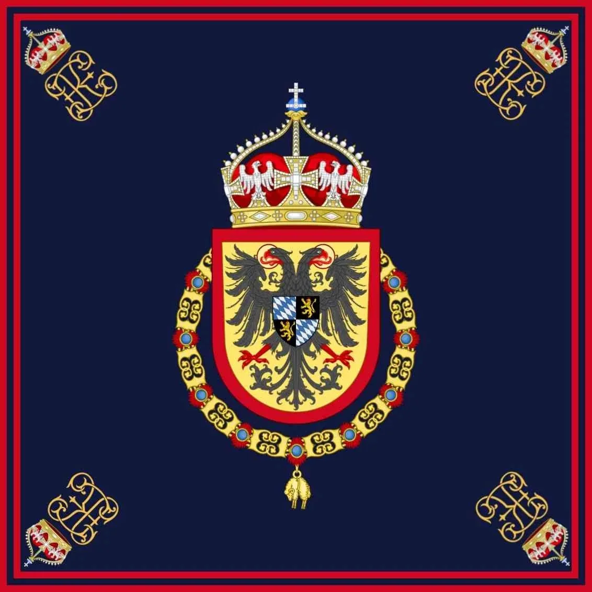

Karl V.
Seine Hoheit Karl V., Hand des Kaisers und Reichsombudsmann des Imperium Germanicum, zweithöchster Amtsträger des Reiches im Dienste Seiner Majestät des Kaisers.
Karl V. führt wieder die Hand des Kaisers. Damit steht er nach Seiner Majestät dem Kaiser an der Spitze des Reiches und ist der zweithöchste Amtsträger des Imperium Germanicum.
Als Hand des Kaisers handelt er in dessen Namen: Er steht der Senatsverwaltung der Regierung Seiner Majestät vor und trägt als Reichsombudsmann Sorge dafür, dass der Wille der Krone im ganzen Reich Gehör und Befolgung findet.
In der Zwischenzeit hielt Ernst August VI., König von Hannover und Braunschweig-Lüneburg, das Amt vorübergehend und mit Treue für das Reich. Das Imperium dankt ihm für seinen Dienst; den Vorsitz im Reichstag führt er weiterhin.


– Bild vergrößern
Der Arbeitssitz der Senatsverwaltung der Regierung seiner Majestät, welcher die Hand des Kaisers vorsteht befindet sich im Berliner Schloss in der Reichshauptstadt.
Im Herzen von Groß-Berlin laufen unter seinem Dach die Geschäfte des Senats zusammen; von hier aus wirkt die Hand des Kaisers an der Seite der Krone.